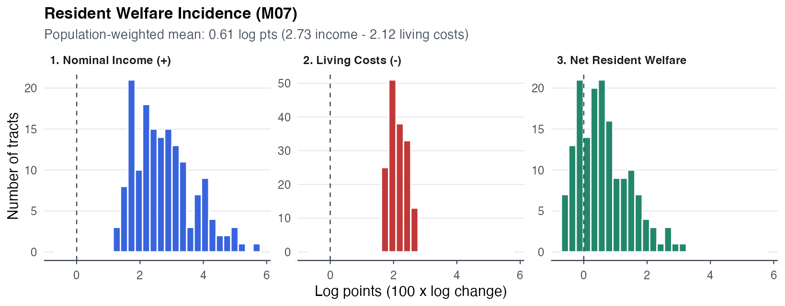
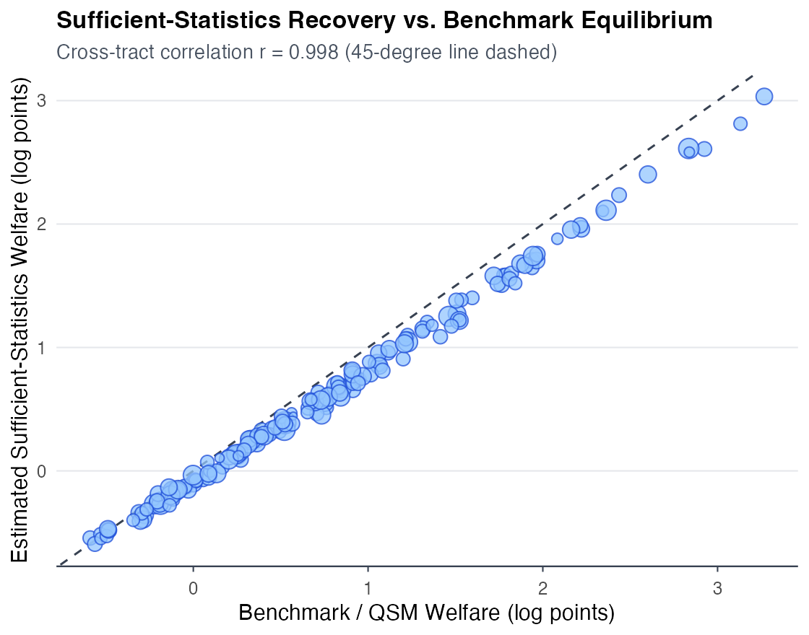

urbanwelfare
urbanwelfare is a standalone R and C++ (Rcpp) package for evaluating the
spatial welfare incidence of localized demand shocks and place-based policies within cities.
Given a bilateral resident spending (or trip) panel, workplace commuting/ownership links, and a
destination demand shock, it recovers neighborhood nominal income growth, living-cost changes,
and first-order money-metric resident welfare without unit price indices or parametric
functional forms—and optionally solves a calibrated nonlinear Quantitative Spatial Model (QSM)
and optimal place-specific Ramsey taxes.
Install and run the built-in synthetic city
# Install from GitHub (requires R >= 4.1, fixest, Matrix, Rcpp, ggplot2)
# remotes::install_github("sfuchs-de/urbanwelfare")
library(urbanwelfare)
data(sim_city_160)
# One-call pipeline directly from tidy tables:
pipe <- run_urban_welfare(
bilateral_panel = sim_city_160$bilateral_panel,
commuting = sim_city_160$H_0,
external_demand = data.frame(
dest = sim_city_160$shocks$dest,
time = sim_city_160$shocks$time,
external_spending = sim_city_160$shocks$E_ext
),
origins = sim_city_160$origins,
destinations = sim_city_160$destinations
)
summary(pipe$welfare)
sim_city_160 ships inside the package (160 neighborhoods, 4 commercial sectors, 6 external
visitor groups, and known nonlinear ground-truth welfare), so the example runs in under two seconds with
zero external data files.
Step-by-step modular workflow
For custom shift-share instruments, enclave regressions, robustness bounds, or optimal spatial taxation, call the five modular stages directly:
# 1. Validate two-sector open-city account & build network operators (Gamma_v, Omega^v, M)
acct <- urban_account(
spending_base = sim_city_160$E_R0,
commuting_base = sim_city_160$H_0,
origins = sim_city_160$origins,
destinations = sim_city_160$destinations,
balance_method = "reconcile" # "reconcile", "ipf", or "strict"
)
# 2. Propagate shocks through (I - M)^(-1) and enable C++ basket centering
exposures <- build_exposures(acct, sim_city_160$shocks, design = "direct")
# 3. Step 1: Bilateral spending regression (fixest OLS, PPML, or 2SLS IV)
fit <- estimate_bilateral(sim_city_160$bilateral_panel, exposures, estimator = "ols")
# 4. Steps 2 & 3: Sector price shares (kappa^S_g), common shift (c_t), & resident EV
welf <- recover_welfare(fit, acct, level_anchor = "open_city_factor_balance", se_method = "bootstrap")
# 5. Extensions & C++ adjoint optimal spatial tax
welf <- welf |>
add_shopping_wedge(sigma = c(2.0, 3.456, 8.235)) |>
add_workplace_mobility(eps = 3.3) |>
add_finite_bounds(sigma_ces = 3.456)
tax <- optimal_spatial_tax(welf, acct, demand_elasticities = list(sigma_T = 7.0, eta_out = 2.5))
plot(welf, type = "decomposition"): Nominal income gains, local living-cost increases, and net resident welfare across 160 neighborhoods.
plot(welf, type = "qsm_parity", benchmark = ...): Non-parametric sufficient-statistics recovery vs. exact nonlinear equilibrium truth.Output contract & repository boundaries
Every urban_welfare and urban_pipeline object returns tract-level and decile
tables (as.data.frame(welf), welf$deciles), spectral and openness diagnostics
(acct$rho_M, acct$leakage), the open-city recycling share $\vartheta$, and the
exact aggregate terms-of-trade check residual (welf$headline$terms_of_trade_gap).
See Use Your Own Data to map payment cards, scanner data, or mobility panels
into urbanwelfare, and Barcelona Replication for exact six-decimal
reproduction of the Barcelona tourism study while keeping restricted microdata outside Git.